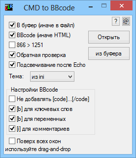

ConverterCMD
Назначение
Конвертирует код cmd, bat файлов в bbcode для выкладывания на форуме с подсветкой кода.

Converter CMD to BBcode - утилита для выкладывания файлов BAT, CMD на форум с использованием цветовой темы для ключевых слов. Это помогает лучше воспринимать код.
Файл Style.css содержит стили для HTML. Следует учитывать, что HTML-файл ссылается на файл стиля Style.css, и нужно либо на сервер добавлять его указывая относительный путь, либо добавить стили в HTML-файл, либо перенести стили в общий файл стилей сервера и указать его в HTML-файле.
Опция проверки позволяет удалить теги, сравнивая с оригиналом. Если произошла ошибка, то выводится сообщение. Данная опция позволяет исключить ошибки вызванные регулярными выражениями при каких либо комбинациях кода, но не выявленных на этапе тестирования. Код может не всегда правильно подсвечен, но с проверкой не нарушается его целостность.
Список ключевых слов, операторов и имена системных утилит находятся ini-файле. В список операторов можно добавить символы "/" и "-".
Первоначально тестировал сравнивая логику выделения с Notepad++.
Спасибо gora за тест, советы